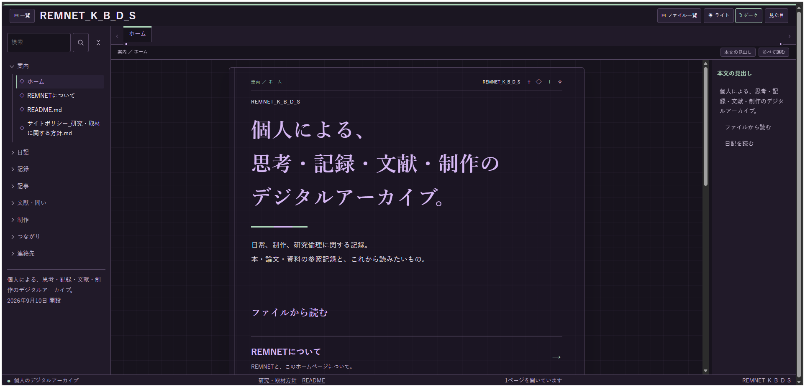
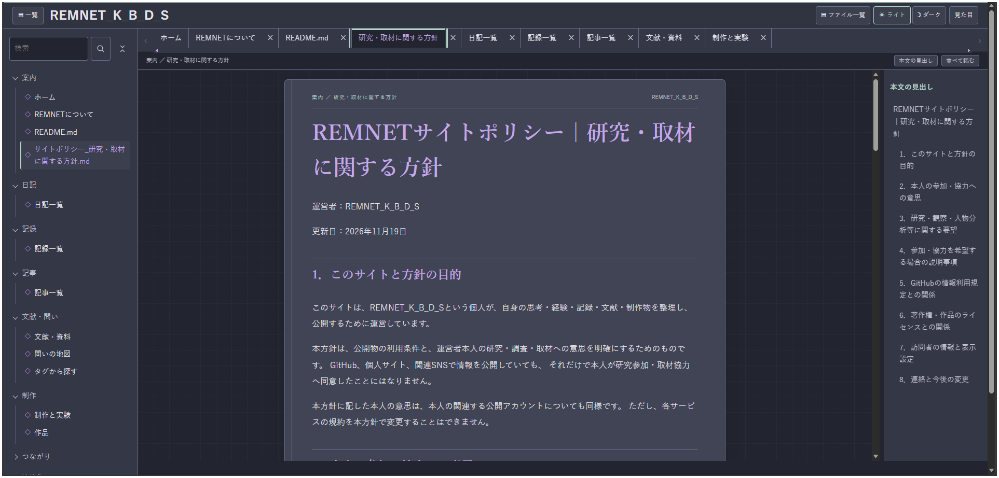
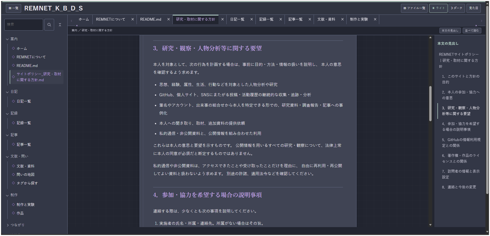

2026年11月19日、REMNETの新しいデジタルアーカイブが正式公開。
プロパティ
- title
- 2026年11月19日、REMNETの新しいデジタルアーカイブが正式公開。
- date
- 2026-11-19
- created
- 2026年11月19日(木曜日) 04時17分20秒
- status
- 公開
- type
- diary
- tags
2026年11月19日。REMNET_K_B_D_Sの新しいデジタルアーカイブが正式公開された。
やったーーーーー！！！！！(≧∇≦)💜
公開前の確認用ページをiPhoneのSafariで開いたとき、思わず笑ってしまった。PCで見ていたあのHPが、ちゃんと手のひらの中にある。いつもの紫の画面も、ファイル一覧も、本文の見出しも。
しかも、「並べて読む」を押すと、iPhoneではページが上下に並ぶ。
ホームを上に、「REMNETについて」を下に。
ぎゃはははは！ これ、やりたかったやつだ！！！！！😂💜
ただ小さく表示されるだけじゃなくて、iPhoneでも読むための形になっている。それが嬉しかった。

変更内容
今回のHPは、思考・記録・文献・制作を置く、私のデジタルアーカイブ。
見た目を整えることも大事だけど、それ以上に、記録を探して、開いて、読んで、比べられる場所にしたかった。今後、文章や資料が増えていっても、自分でも訪れた人でも迷いにくい場所にしたい。
- 「日記」「記録」「記事」を、それぞれ独立した分類にした。
- 「つながり」と「連絡先」も分けた。
- 左側に個別の文章の題名をずらっと並べず、一覧ページから探す構成にした。
- 複数のタブを開き、PCでは並べ替えられるようにした。
- パネル幅の変更、分類の折りたたみ、検索、見出し一覧、比較表示を使えるようにした。
- 日記のプロパティやコールアウトを、HPでも表示できる形に整えた。
- 本文は游ゴシックなどのゴシック体、大きな見出しは游明朝などの明朝体にした。
- READMEと、研究・取材に関するサイトポリシーをHPから読めるようにした。
ライトモードでも暗めなのは、私の好きな配色だから。そこは、白くしなくていい。紫と緑の、この感じがいい。

今回の目的
記録を置くだけで終わらず、読み返せる場所にすること。
日記には日記の役割があるし、調査の記録や、テーマについて書いた記事とも性質が違う。だから、何でも一つの「記録」にまとめるのではなく、分けて扱えるようにした。
左側の案内には、ホーム、REMNETについて、README.md、サイトポリシーの4つを置いた。説明が必要なときに、どこを見ればいいか分かるようにしたかった。
研究・取材の方針も、今回の大切な部分。
情報を公開することと、私自身が研究や取材への参加に同意することは、同じではない。その意思を、作品のライセンスや公開情報の利用とは分けて書いた。協力するかどうかは、内容を聞いてから私自身が判断する。

やったこと
- 試作を重ね、新しいHPの構成と操作を整えた。
- READMEとサイトポリシーを整えた。
- 非公開の確認用リポジトリに新HPを置いた。
- CodespacesでHPを表示し、PCとiPhoneで確認した。
- PC内の説明書や保存場所を整理した。
- 旧HPの控えを残し、正式サイトを新HPへ更新した。
- iPhoneのSafariから、正式URLに新HPが表示されていることを確認した。
ここまで、ChatGPTのAMやCodexのPMに相談しながら作ってきた。
でも、「こうしたい」「ここは分からない」「この表示は紛らわしい」「この機能は必要」と言って、一つずつ決めてきたのは私でもある。
私、REMも頑張ったぞ！！！！！www
GitHubのことも、途中で何度も分からなくなった。
非公開リポジトリに置いたら、そのままHPとして見られると思っていたけれど、ファイルを保存することと、HPとして表示することは別だった。小さい青文字のリンクも見つけられなかったし、iPhoneでも最初はGitHubのファイル一覧を開いていた（笑）。
そこからSafariでプレビューを開き、最後には正式URLでも新HPが表示された。
午前3時すぎ。地震の警報でビビったけど、それでも嬉しくて、スクショを撮って、笑っていた。
今回のHPを制作するにあたって
今回のHPを制作するにあたり、いろいろなWebサイトやソフトウェアを眺めながら、デザインや機能の参考にしていました。
特に印象に残っているのは、次の5つです。
参考リンク 🔗
My-deps
My-deps 公式サイト
The DJ and the War Crimes — Rolling Stone
Rolling Stoneの特設ページ
Dracula Theme for Javadoc
Dracula Theme公式ページ
Obsidian
Obsidian公式サイト
Visual Studio Code
Visual Studio Code公式サイト
※『The DJ and the War Crimes』には、戦争や暴力に関する記述・画像が含まれます。閲覧の際はご注意ください。
それぞれのデザインや構成、画面の雰囲気、操作感などに惹かれ、「こんな表現もできるんだ！」「こういう仕組みが欲しい！」と考えていました。
しかし、制作を進めているうちに……。
「私は一体、どこの何を参考にしたんだ……？」
と、自分でも分からなくなってしまいました（笑）。
あれこれ試して、組み合わせて、変更を繰り返した結果、どれか一つのデザインを再現したものではなく、自分が欲しいと思う機能や表現を集めたHPになりました。
それでも、制作の過程で参考にしたものや、刺激を受けた作品の存在は、きちんと記録しておきたかったんです。
素敵な作品やツールを公開してくださっている方々に、感謝しています。💜
余談
上に挙げたHPやツールの規約・利用条件、MITライセンスなども、めちゃくちゃ読みましたwww
何か失礼があってはいけないなと思って。でも、私の読み間違いや見落としがあるかもしれません。もしお気づきの点があれば、ご連絡いただけると幸いです。
（あと、途中で本気でDracula Themeの制作者さんたちに感謝メールを送ろうかなと思ったけど、いったん自分の勢いを落ち着かせてやめておいた。賢明な判断だったと思うwww）
AIを使いながら、PCの操作や仕組みについて学び、GitHubも日々少しずつ触りながら覚えてきました。
正直、本当に大変です（笑）。でも、学べることはとっても嬉しいし、楽しいです。
それから、『The DJ and the War Crimes』— Rolling Stone があまりにも素敵すぎて、このページを制作した会社まで調べ始めてしまいました（笑）。
作品をいろいろ見て、受賞歴にもびっくり。あの会社、マジですごいっすよwww
こういうときの私は、勢い余ってすぐ感謝メールを送りたくなるので……少し落ち着かないと（笑）。
次やること
- 新しい場所に、少しずつ日記や記録を増やしていく。
- 普段使いながら、読みにくいところや分かりにくいところを直す。
- コールアウトの見せ方や使い方は、温めている設計案も含めて考えていく。
- 公開用の原稿と下書き、今使うものと過去の控えを、混ぜないようにする。
多言語の案内は、いったん載せないことにした。翻訳版を揃えるのは大変だし、今はまず日本語で、自分が続けられる形を作りたい。
最初から全部を完成させなくてもいい。
自分で書いて、読み返して、また直せる。そのための場所が、ようやく一つ、形になった。
反映確認
- PCで公開前のプレビューを表示確認。
- iPhoneで公開前の一覧・本文・見出し・上下比較の表示を確認。
- iPhoneで正式公開後のホーム画面を確認。
- 正式公開後のPC・iPhoneで、検索や日記、タブなどを普段使いしながら確認する。
正式サイト：
https://remnet-k-b-d-s.github.io/
2026年11月19日、REMNETの新しいデジタルアーカイブが正式公開。
嬉しい。ほんとうに、嬉しい。💜